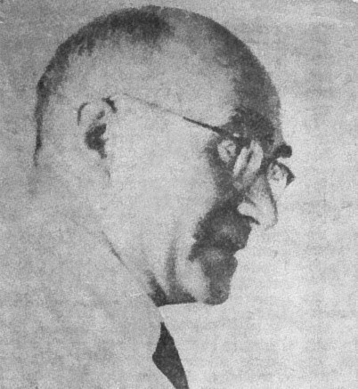
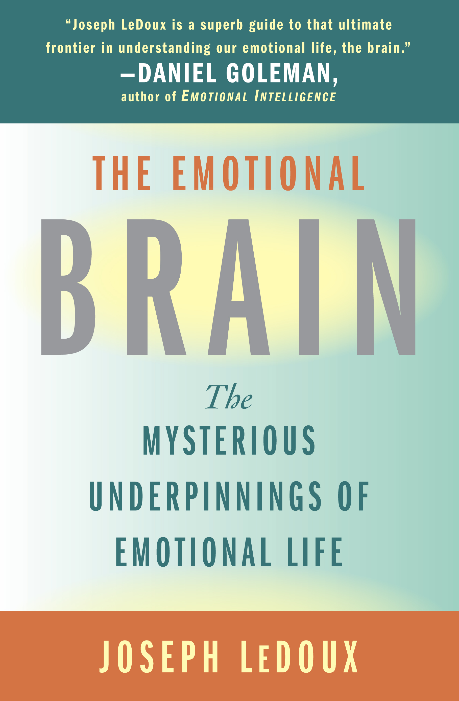

Paradygmaty
Małgorzata Basińska
Słowem przypomnienia
Krytyczna ocena teorii naukowych
- Teorię można ocenić pod kątem:
- logicznej spójności
- przyjętych założeń
- mocy wyjaśniania
- falsyfikowalności
Teorie naukowe a poznanie świata
- Teorie naukowe determinują sposób, w jaki opisujemy obserwowane zjawiska (w obrębie jednej teorii).
- Można powiedzieć, że weryfikując hipotezy sprawdzamy, czy nasza teoria wytrzymuje konfrontację z rzeczywistością.
Paradygmaty
Thomas Samuel Kuhn (1922-1996)

- Amerykański fizyk, historyk, filozof nauki.
- Autor książki The Structure of Scientific Revolutions (1962)
Photographer: Bill Pierce (Time Life Pictures/Getty Images), fair use
Rozwój nauki - propozycja T. Kuhna
- Wcześniej sądzono, że rozwój nauki przebiega poprzez akumulację wiedzy
- Kuhn dowodzi, że w nauce dochodzi do rewolucji, zwanych zmianami paradygmatów (paradigm shift)
Paradygmaty
Paradygmat to ogólnie uznawany (w danym momencie) model problemów i rozwiązań, który dla grupy naukowców definiuje:
- Co powinno być badane
- Jakiego rodzaju pytania mogą być zadawane
- Jaka jest struktura takich pytań
- Jaka jest podstawowa teoria w danej dziedzinie
- Jak należy interpretować wyniki
- W jaki sposób i jakimi metodami przeprowadzać badania
Czy w psychologii były już kiedyś rewolucje?
- Behawioryzm: nie mamy dostępu do umysłu, więc go nie badamy - skupiamy się na badaniu zachowania, które opisujemy w kategoriach bodźców i reakcji
John B. Watson: “Give me a dozen healthy infants, well-formed, and my own specified world to bring them up in and I’ll guarantee to take any one at random and train him to become any type of specialist I might select – doctor, lawyer, artist, merchant-chief and, yes, even beggar-man and thief, regardless of his talents, penchants, tendencies, abilities, vocations, and race of his ancestors. I am going beyond my facts and I admit it, but so have the advocates of the contrary and they have been doing it for many thousands of years.”
- Rewolucja poznawcza:
- Noam Chomsky: Syntactic structures (1957), krytyka poglądu Skinnera na język (1959)
- George Miller: Magical Number Seven, Plus Minus Two (1956)
- Jerry Bruner i wsp.: strategie poznawcze w A Study of Thinking (1956)
- i wielu, wielu innych, i Europa w natarciu! (m.in. F. Bartlett, J. Piaget, A.R. Łuria)
To dobry moment by wspomnieć o Jerzym Konorskim (1903-1973)

Autor zdjęcia nieznany, foto opublikowane w Andrzej Trzebski: “Jak pracuje mózg”. Kultura, 6 stycznia 1974 s. 4
Kolejna rewolucja? Poznawcza neuronauka
Kolejna rewolucja? Poznawcza neuronauka

Minds without emotions are not minds at all
Umysły bez emocji nie są wcale umysłami
Kolejna rewolucja?
- Poznanie i percepcja są procesami, podczas których tworzone są predykcje (przewidywania)
- Poznanie jest procesem aktywnym, zależnym od działania organizmu w otaczającym go świecie
- To, jak skonstruowany jest ten organizm odgrywa istotną rolę percepcji, rozumowaniu i procesach intelektualnych
Paradygmaty w psychologii
- ewolucyjny
- poznawczy
- teorii uczenia się
- społeczno-kulturowy
- rozwojowy
lista nie jest wyczerpująca
Wszystkie te paradygmaty mają wspólną część
I to o niej uczymy się na metodologii :)